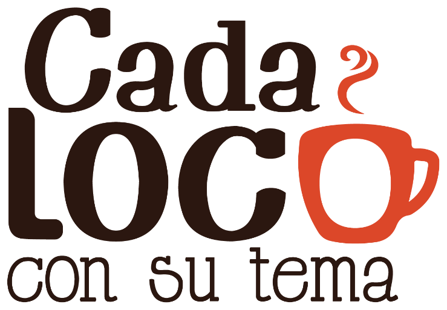
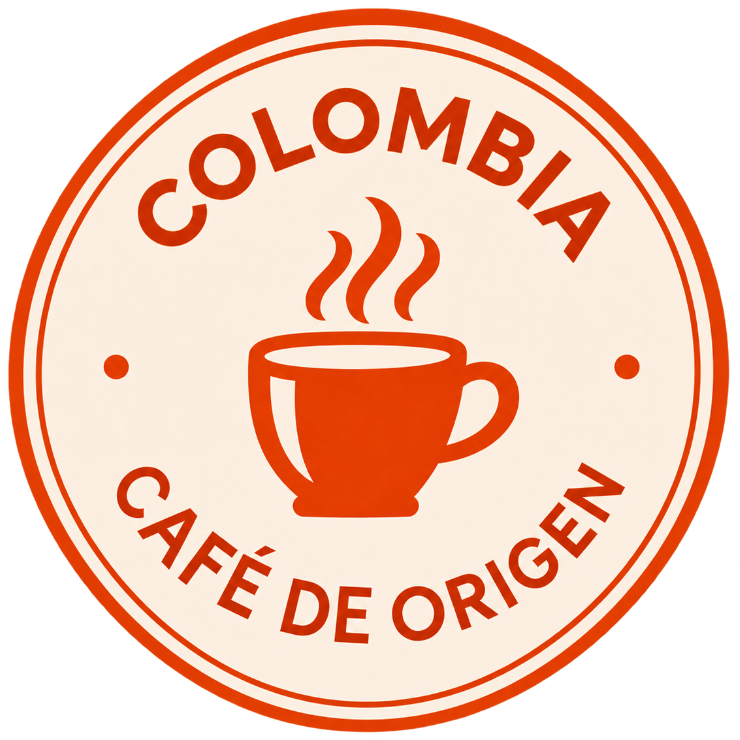
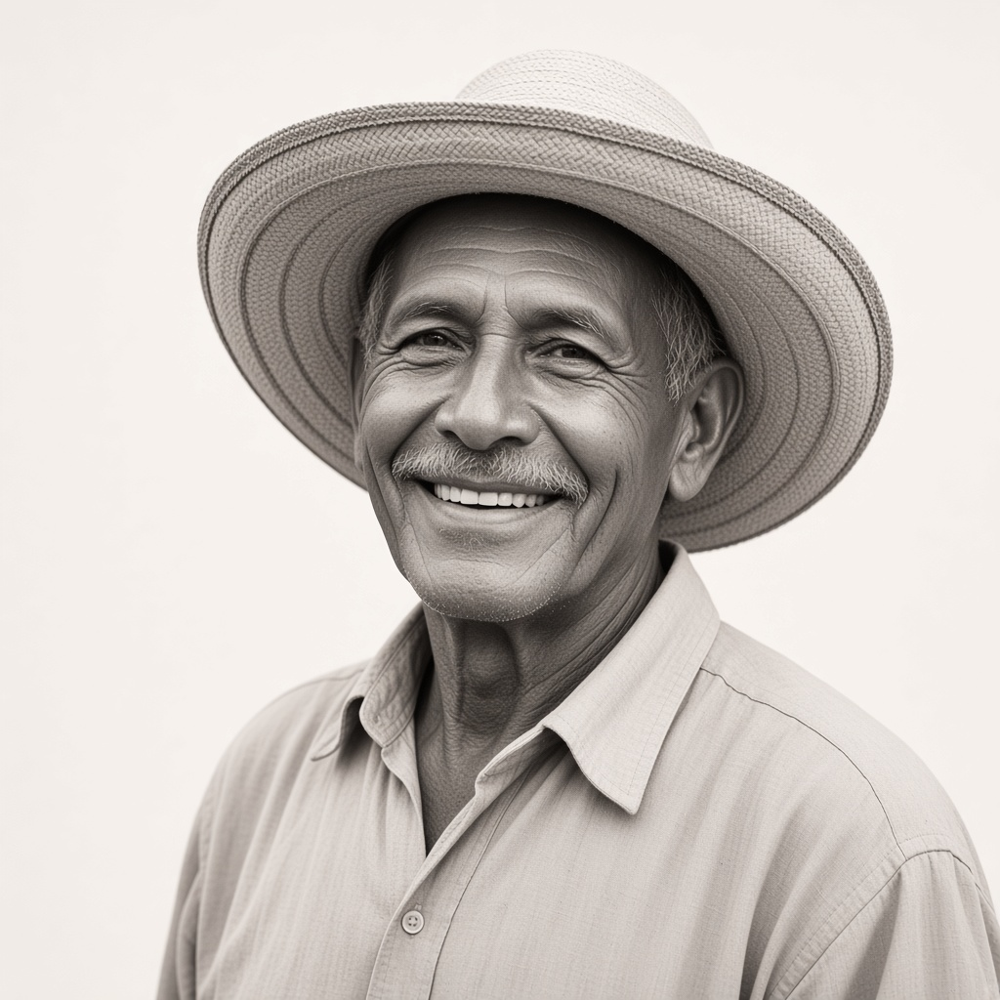
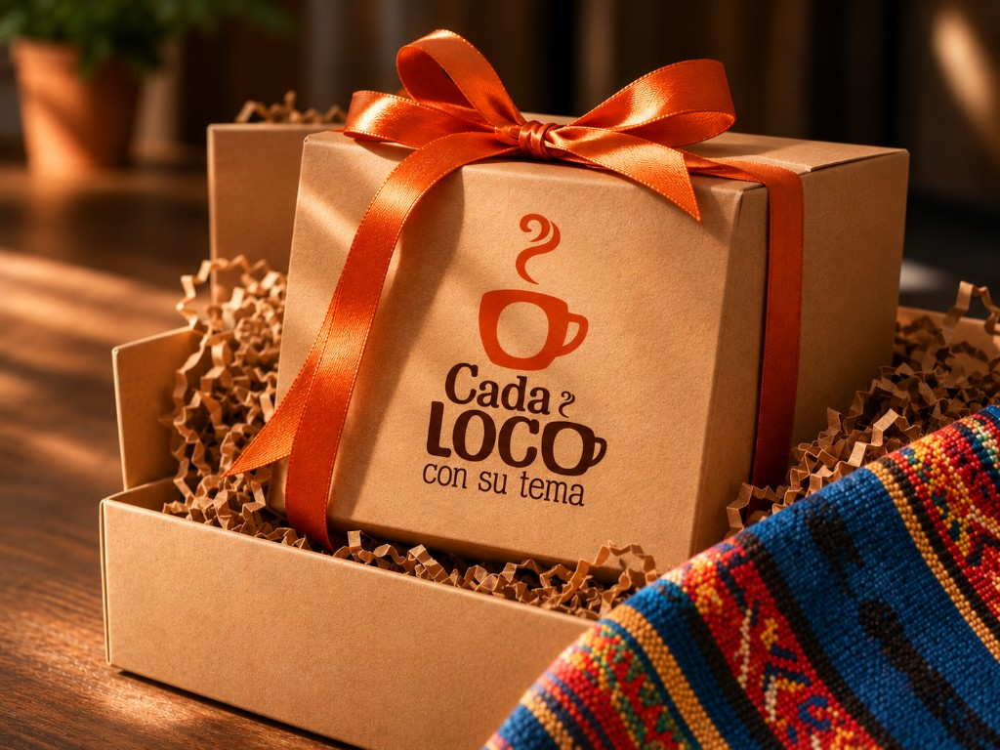

A. Proveeduría
de Café
Café de origen e institucional.
→
Proveeduría de café, regalos con sentido, eventos y experiencias que fortalecen la cultura y el bienestar en las organizaciones.
Explorar nuestro portafolio →
Nuestro portafolio
Soluciones para empresas que integran bienestar,
cultura, reconocimiento y experiencias memorables.
Café de origen e institucional.
→
Obsequios corporativos con artesanía y un ritual escrito.
→
Coffee breaks, estaciones con barista y novenas para eventos.
→
Talleres de Arte y Bienestar y conversatorios de Café de Autor.
→
Para empresas
Desde café para tu equipo hasta regalos corporativos, eventos y experiencias. Hagamos algo juntos.
Solicitar cotización →Nuestra historia
Desde el Norte del Valle, Quindío y Cundinamarca, acompañamos a cultivadoras y cultivadores, y celebramos la cultura cafetera de nuestro país.
Conoce más →



El origen
Norte del Valle, Quindío y Cundinamarca. Café de especialidad, cultivado con historia, trabajo y propósito.
Conoce nuestra historia →Regalos corporativos
Colecciones, personalización y detalles
con sentido para tu empresa.
